自监督时代的表征学习
授课教师：王兴刚 · 华中科技大学
本讲（下）关注：监督信号如何来自数据本身？
承接上讲：迁移与半监督仍依赖人工标注的起点；自监督把标签彻底从数据中构造出来。
- 自监督学习的范式与评估：代理任务、两阶段、线性探针 Preface
- 判别式自监督：对比学习（SimCLR、MoCo、CLIP、SigLIP）与非对比自蒸馏（BYOL、DINO → DINOv3） InfoNCE
- 掩码建模与自回归：BERT、MAE、EVA、JEPA 系列
- 实践指南：方法怎么选、坍塌与过拟合怎么查
- 拓展（选讲）：隐式神经表示（INR）与 3D 表征——另一种“表征”的含义 NeRF · 3DGS
学完本讲（下），你应该能动手选好、用好自监督方法
- 1如何为具体视觉任务选择数据增广，并说明为什么这种增广安全？
- 2为什么对比学习可能得到“所有输入都一样”的坍塌表征，各方法如何防止？
- 3SimCLR / MoCo / DINO / MAE 各适合什么数据规模与资源条件？
- 4INR 的“表征”与可迁移特征表征是不是同一回事？3DGS 又属于哪一类？
自监督：标签来自数据本身
- 把“无监督”问题转化为“监督”形式的经验风险最小化
- 预测目标（伪标签）直接从原始数据中构造
- 无需任何人工标注
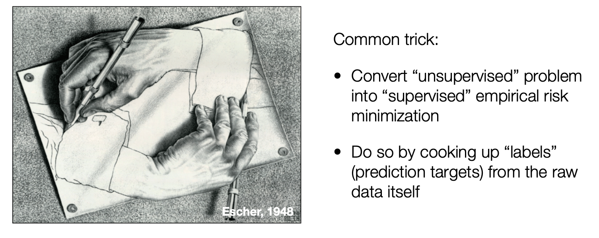
自编码器：最经典的无监督表征学习
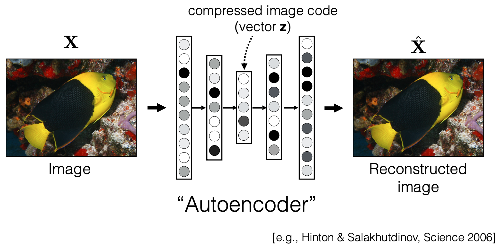
自监督学习的两阶段范式
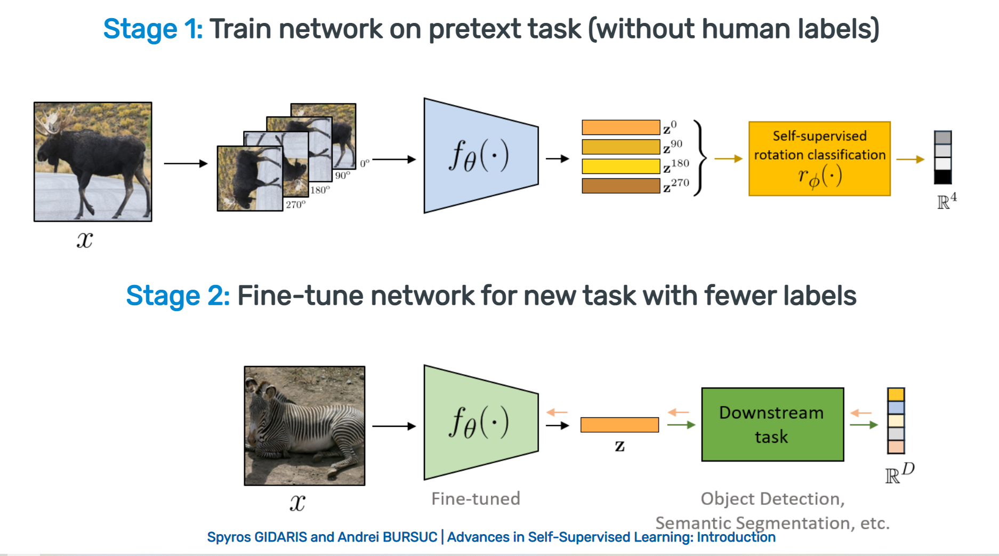
如何度量表征质量：线性探针
先冻结预训练编码器，只允许最后的线性分类器学习。
- 准确率高，说明类别信息已经能被一条线性决策边界读出。
- 它便于公平比较不同预训练方法，不让大规模下游微调掩盖表征差异。
- 还应报告全量微调、少样本学习以及检测、分割等迁移结果。

线性探针之外，还要怎样评估表征？
| 评估方式 | 模型参数如何使用 | 主要回答的问题 |
|---|---|---|
| 线性探针 | 冻结编码器，只训练线性层 | 类别信息是否容易被线性读出 |
| k-NN / 图像检索 | 直接比较冻结特征的邻近关系 | 表征空间是否把语义相近样本放在一起 |
| 少样本与微调 | 使用少量标签，部分或全部更新参数 | 表征能否高效适应新任务 |
| 检测 / 分割 / 深度迁移 | 接入任务头并在密集任务上训练 | 是否保留局部结构、边界与几何信息 |
| 跨域与鲁棒性测试 | 更换数据来源、扰动或子群 | 能力是否只对原数据分布有效 |
自监督信号的三种来源
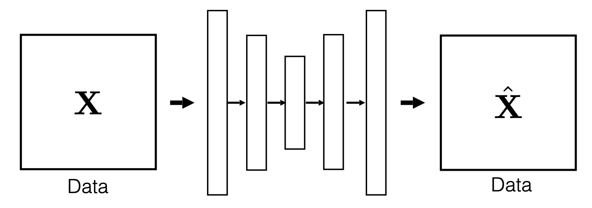
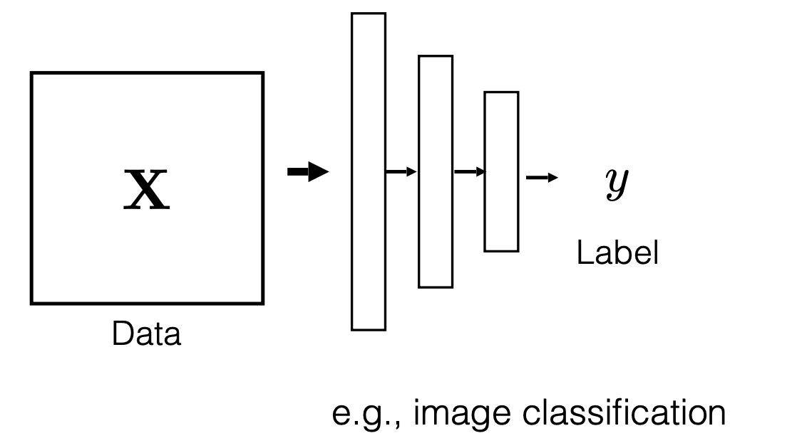
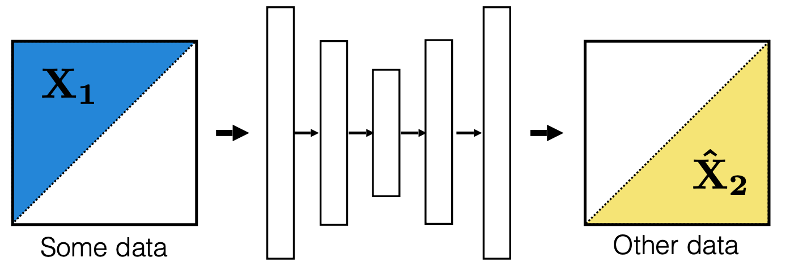
代理任务示例：图像上色
- 输入灰度图（L 通道），预测颜色信息（ab 通道）
- 颜色是“免费”的监督信号
- 网络被迫理解物体与场景结构
- Zhang, Isola & Efros, ECCV 2016
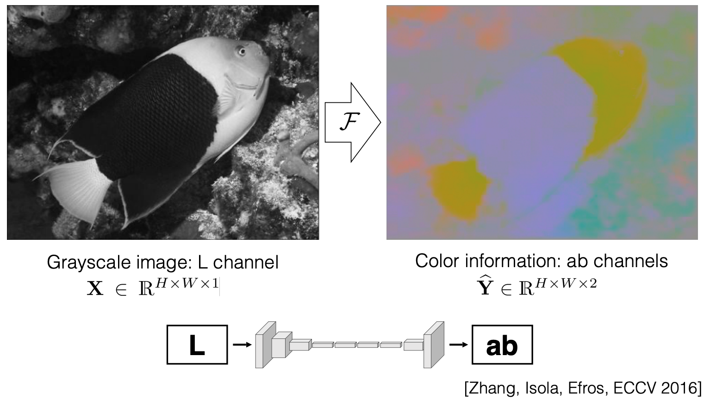
代理任务示例：旋转预测
- 随机旋转 0° / 90° / 180° / 270°，预测旋转角度
- 设计意图：判断“哪边朝上”需要理解物体朝向与结构
- 简单却有效的代理任务
- Gidaris et al., ICLR 2018
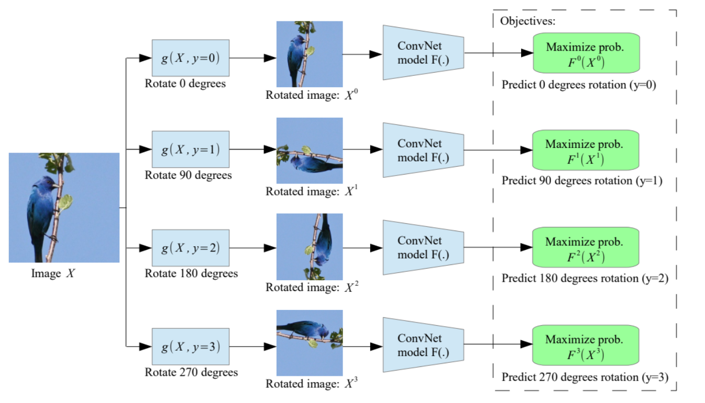
获得表征的方式：两个正交维度，不是四种并列
' text-anchor='middle'>维度一：训练信号从哪里来 →</text><text x='110' y='155' font-size='14' text-anchor='middle' fill='%23666' font-family='sans-serif'>人工标签</text><text x='110' y='315' font-size='14' text-anchor='middle' fill='%23666' font-family='sans-serif'>数据自身构造</text><rect x='160' y='80' width='380' height='140' rx='10' fill='%23e8eefb' stroke='%232456d6' stroke-width='2'/><text x='350' y='130' font-size='17' text-anchor='middle' fill='%2322222a' font-family='sans-serif' font-weight='bold'>监督预训练 + 线性探针</text><text x='350' y='158' font-size='14' text-anchor='middle' fill='%23666' font-family='sans-serif'>如 ImageNet 特征直接做检索</text><rect x='560' y='80' width='380' height='140' rx='10' fill='%23e8eefb' stroke='%232456d6' stroke-width='2'/><text x='750' y='130' font-size='17' text-anchor='middle' fill='%2322222a' font-family='sans-serif' font-weight='bold'>监督预训练 + 微调</text><text x='750' y='158' font-size='14' text-anchor='middle' fill='%23666' font-family='sans-serif'>经典迁移学习（上讲第 5 章）</text><rect x='160' y='240' width='380' height='140' rx='10' fill='%23fbece4' stroke='%23c2521e' stroke-width='2'/><text x='350' y='290' font-size='17' text-anchor='middle' fill='%2322222a' font-family='sans-serif' font-weight='bold'>自监督预训练 + 冻结评估</text><text x='350' y='318' font-size='14' text-anchor='middle' fill='%23666' font-family='sans-serif'>线性探针 / k-NN 比较表征质量</text><rect x='560' y='240' width='380' height='140' rx='10' fill='%23fbece4' stroke='%23c2521e' stroke-width='2'/><text x='750' y='290' font-size='17' text-anchor='middle' fill='%2322222a' font-family='sans-serif' font-weight='bold'>自监督预训练 + 下游微调</text><text x='750' y='318' font-size='14' text-anchor='middle' fill='%23666' font-family='sans-serif'>SimCLR / MAE 的主流用法</text><text x='530' y='412' font-size='14' text-anchor='middle' fill='%23666' font-family='sans-serif'>手工特征不参与学习（人工设计描述子），因此不在这个矩阵里，而是矩阵之外的历史起点。</text></svg>)
生成式 vs 对比式
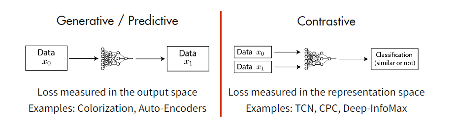
两类判别式目标：InfoNCE（对比）与 EMA 自蒸馏（DINO）
数据增广定义不变性，训练目标必须防止坍塌
- 同一图像的两种增广被规定为“语义相同”
- 裁剪、颜色抖动等选择直接决定模型忽略哪些变化
- 若增广删掉任务关键信息，学到的不变性会伤害下游任务
- 若所有输入都映射到同一个向量，正样本当然完全一致
- 但这种表示不再区分任何样本，无法用于下游任务
- 对比学习用负样本排斥坍塌；BYOL、DINO 依靠非对称网络、动量教师和输出正则等设计
同一种数据增广，对不同任务可能有相反作用
| 任务 | 可以考虑的增广 | 需要谨慎的增广 | 原因 |
|---|---|---|---|
| 普通物体分类 | 适度裁剪、缩放、颜色抖动 | 裁掉主体的大幅裁剪 | 类别通常不随位置和轻微颜色变化 |
| 道路文字识别 | 轻微透视、亮度和模糊 | 水平翻转、过强裁剪 | 翻转会改变字符，裁剪会删除文字 |
| 医学影像左右病灶 | 符合采集过程的噪声和强度变化 | 未核对语义的左右翻转 | 左右位置可能直接影响诊断含义 |
| 目标检测 / 分割 | 同步变换图像与框或掩码 | 只变图像、不更新标注 | 几何变换必须保持标签对齐 |
SimCLR：简单的对比学习框架
- 同一图像两种增广 → 共享编码器 f(·) + 投影头 g(·)
- 最大化两个视图表征的一致性（对比损失）
- 训练完成后丢弃投影头，用 h 做下游任务
- 线性评估首次逼近监督 ResNet-50（Chen et al., ICML 2020）
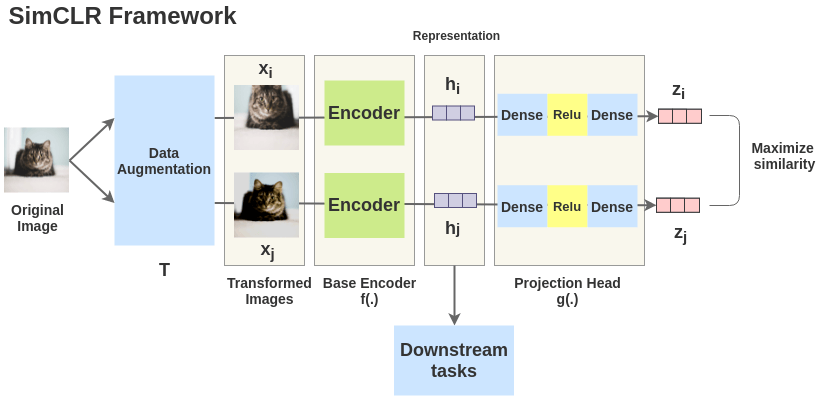
MoCo：动量对比
- 把对比学习看作“查字典”：query 匹配 key
- 动量编码器 + 队列：维护大量一致的负样本
- 摆脱对超大 batch size 的依赖
- He et al., CVPR 2020
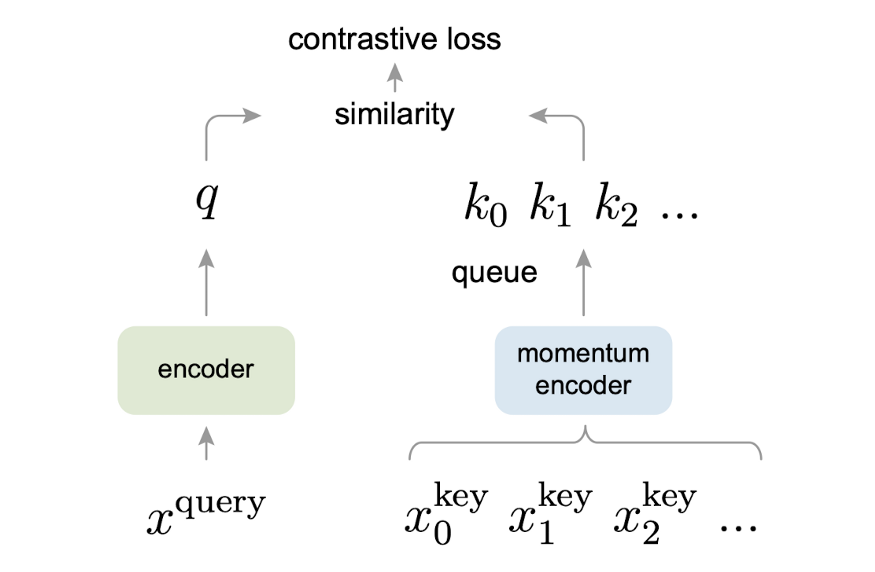
DINO：无标签自蒸馏
- 学生网络匹配教师（EMA）网络的输出分布
- 无需负样本，也没有显式的对比项
- ViT 的自注意力图自动涌现物体分割能力
- Caron et al., ICCV 2021

DINOv2 → DINOv3：自监督视觉基础模型
目标不是只做好 ImageNet 分类，而是让同一套冻结特征支持多种视觉任务。
- DINOv2用 1.42 亿张精选图像训练；分类、检索、分割和深度估计都可直接读取冻结特征。
- DINOv3进一步扩大数据和模型，并用 Gram anchoring 维持 patch 特征在长训练中的质量。
- 从 DINO 的注意力涌现到 DINOv3 的稠密特征：patch token 不只包含全图语义，也保留可用于稠密任务的空间结构。
'/><text x='40' y='30' font-size='14' fill='%23666' font-family='sans-serif'>scale</text><rect x='110' y='300' width='150' height='60' rx='8' fill='%23e8eefb' stroke='%232456d6' stroke-width='2'/><text x='185' y='326' font-size='15' text-anchor='middle' fill='%2322222a' font-family='sans-serif' font-weight='bold'>DINO 2021</text><text x='185' y='348' font-size='12' text-anchor='middle' fill='%23666' font-family='sans-serif'>self-distillation, ViT</text><rect x='290' y='220' width='150' height='60' rx='8' fill='%23e8eefb' stroke='%232456d6' stroke-width='2'/><text x='365' y='246' font-size='15' text-anchor='middle' fill='%2322222a' font-family='sans-serif' font-weight='bold'>DINOv2 2023</text><text x='365' y='268' font-size='12' text-anchor='middle' fill='%23666' font-family='sans-serif'>142M curated images</text><rect x='470' y='120' width='150' height='60' rx='8' fill='%23fbece4' stroke='%23c2521e' stroke-width='2'/><text x='545' y='146' font-size='15' text-anchor='middle' fill='%2322222a' font-family='sans-serif' font-weight='bold'>DINOv3 2025</text><text x='545' y='168' font-size='12' text-anchor='middle' fill='%23666' font-family='sans-serif'>Gram anchoring</text><path d='M260 330 L288 260' stroke='%232456d6' stroke-width='2' marker-end='url(%23b)'/><path d='M440 250 L468 160' stroke='%232456d6' stroke-width='2' marker-end='url(%23b)'/><text x='320' y='415' font-size='13' text-anchor='middle' fill='%23666' font-family='sans-serif'>frozen features: classification / retrieval / segmentation / depth</text><defs><marker id='a' markerWidth='8' markerHeight='8' refX='7' refY='4' orient='auto'><path d='M0 0 L8 4 L0 8 z' fill='%2322222a'/></marker><marker id='b' markerWidth='8' markerHeight='8' refX='7' refY='4' orient='auto'><path d='M0 0 L8 4 L0 8 z' fill='%232456d6'/></marker></defs></svg>)
CLIP：对比式语言-图像预训练
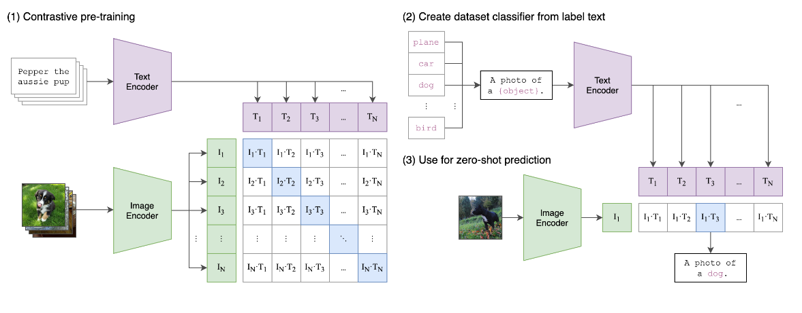
SigLIP 系列与 MLLM 的视觉编码器
- SigLIP（Zhai et al., ICCV 2023）：用 sigmoid 逐对损失替代 CLIP 的 softmax 对比损失——不需全局归一化，训练更简单高效
- SigLIP 2（Tschannen et al., 2025）：多语言，语义理解、定位与稠密特征增强；被多家 MLLM 选用为视觉编码器之一
- MLLM（LLaVA 等）的常见做法：冻结视觉编码器，经连接器接入 LLM；但部分模型会解冻或联合训练视觉编码器
- Cambrian-1（Tong et al., NeurIPS 2024）：编码器选择与连接器设计显著影响 MLLM 性能
'/><rect x='30' y='156' width='200' height='90' rx='8' fill='%23e8eefb' stroke='%232456d6' stroke-width='2'/><text x='130' y='188' font-size='15' text-anchor='middle' fill='%2322222a' font-family='sans-serif' font-weight='bold'>Vision encoder</text><text x='130' y='210' font-size='12' text-anchor='middle' fill='%23666' font-family='sans-serif'>CLIP / SigLIP / DINOv2</text><text x='130' y='232' font-size='12' text-anchor='middle' fill='%23c2521e' font-family='sans-serif'>frozen (sometimes tuned)</text><path d='M130 248 L130 288' stroke='%2322222a' stroke-width='2.5' marker-end='url(%23a)'/><rect x='30' y='292' width='200' height='80' rx='8' fill='%23fbece4' stroke='%23c2521e' stroke-width='2'/><text x='130' y='324' font-size='15' text-anchor='middle' fill='%2322222a' font-family='sans-serif' font-weight='bold'>Connector / projector</text><text x='130' y='346' font-size='12' text-anchor='middle' fill='%23666' font-family='sans-serif'>trained</text><path d='M232 332 L292 332' stroke='%2322222a' stroke-width='2.5' marker-end='url(%23a)'/><rect x='296' y='266' width='180' height='130' rx='8' fill='white' stroke='%232456d6' stroke-width='2.5'/><text x='386' y='306' font-size='16' text-anchor='middle' fill='%2322222a' font-family='sans-serif' font-weight='bold'>LLM</text><text x='386' y='330' font-size='12' text-anchor='middle' fill='%23666' font-family='sans-serif'>visual tokens + text tokens</text><text x='386' y='352' font-size='12' text-anchor='middle' fill='%23c2521e' font-family='sans-serif'>trained / instruction-tuned</text><rect x='296' y='156' width='180' height='60' rx='8' fill='%23e8eefb' stroke='%232456d6' stroke-width='2'/><text x='386' y='181' font-size='14' text-anchor='middle' fill='%2322222a' font-family='sans-serif'>Text / prompt</text><text x='386' y='201' font-size='12' text-anchor='middle' fill='%23666' font-family='sans-serif'>question, instruction</text><path d='M386 218 L386 262' stroke='%2322222a' stroke-width='2.5' marker-end='url(%23a)'/><path d='M478 332 L538 332' stroke='%2322222a' stroke-width='2.5' marker-end='url(%23a)'/><rect x='542' y='292' width='80' height='80' rx='8' fill='%23fbece4' stroke='%23c2521e' stroke-width='2'/><text x='582' y='326' font-size='14' text-anchor='middle' fill='%2322222a' font-family='sans-serif'>Text</text><text x='582' y='346' font-size='14' text-anchor='middle' fill='%2322222a' font-family='sans-serif'>output</text><text x='320' y='425' font-size='12' text-anchor='middle' fill='%23666' font-family='sans-serif'>orange = trained, blue = pretrained (frozen or jointly tuned, model-dependent)</text><defs><marker id='a' markerWidth='8' markerHeight='8' refX='7' refY='4' orient='auto'><path d='M0 0 L8 4 L0 8 z' fill='%2322222a'/></marker></defs></svg>)
实践指南：SimCLR / MoCo / DINO / MAE 各适合什么条件？
| 方法 | 适合的数据与资源 | 上手要点 | 常见坑 |
|---|---|---|---|
| SimCLR | 通用自然图像；原始论文典型配置为 batch 4096 + 多卡，较小 batch 需配合其他技巧 | 增广组合（裁剪 + 颜色抖动）最关键；投影头训练后即弃 | 常见经验：batch 减小 → 负样本减少，性能往往下降 |
| MoCo | 显存 / 卡数受限；中小 batch 也能练 | 队列长度与动量系数（如 0.999）要调 | 动量过小 → key 不一致；队列太短 → 负样本不够 |
| DINO | ViT 骨干；想要密集 / 分割友好的特征 | 经典实现中教师 EMA + 中心化 + 锐化是重要组成 | 常见经验：去掉中心化或锐化会显著增加坍塌风险（具体表现因配置而异） |
| MAE | 论文典型配置为 ViT-B 及以上 + 大数据；较小骨干也可用，训练吞吐高 | 高掩码率（75%）；论文报告全量微调收益最大，线性探测 / 参数高效微调也是常见选择 | 掩码率太低 → 退化成“抄近路”，学不到语义 |
统一比较：目标、防坍塌、特征粒度与使用方式
| 比较维度 | SimCLR | MoCo | DINO | MAE | I-JEPA |
|---|---|---|---|---|---|
| 正样本 / 预测目标 | 同一图像的两个增广视图 | 同左：query 匹配队列中的 key | 全局 + 局部视图，匹配教师输出分布 | 重建被遮蔽 patch 的像素 | 由上下文预测目标块的表征 |
| 防坍塌机制 | batch 内负样本排斥 | 队列负样本 + 动量编码器 | EMA 教师 + stop-gradient + 中心化 / 锐化 | 像素回归目标本身无平凡解 | EMA 目标编码器 + stop-gradient |
| 特征粒度 | 全局语义为主 | 全局语义为主 | 全局语义 + patch 稠密特征 | 块级重建，微调后可用于稠密任务 | 语义块级表征 |
| 预训练成本（论文典型配置） | 大 batch（4096）+ 多卡 | 中小 batch，省显存 | ViT + 多 crop，成本中等 | 非对称结构吞吐高；ViT-B 以上 + 大数据 | 避免像素级解码，但训练成本还取决于目标编码器、目标块数量和具体实现 |
| 下游使用 | 线性探针 / 微调 | 线性探针 / 微调 | 冻结特征直接做分类、检索、分割 | 以全量微调为主；线性探针偏弱 | 冻结 + 轻量探针 |
| 不变性来源 | 裁剪 + 颜色抖动等增广 | 同左 | 多 crop 增广 | 主要靠掩码，而非增广 | 掩码与块采样 |
本章小结：判别式自监督——对比与自蒸馏
正样本增广规定模型应忽略哪些变化；训练目标还要防止所有输入映射到同一向量的表征坍塌。
InfoNCE 把“正样本最近”写成温度缩放的 N 分类；DINO 用 EMA 教师 + stop-gradient 在无负样本下稳定训练。
SimCLR（大 batch 负样本）、MoCo（队列 + 动量）是对比路线；DINO 是无负样本的自蒸馏，不使用 InfoNCE——多方法统一比较见前页。
图文对比实现 zero-shot；sigmoid 损失更高效；视觉编码器成为 MLLM 的“眼睛”（冻结与否因模型而异）。
掩码建模的起点：BERT
- 随机遮蔽部分词（[MASK]），让模型预测原词
- 双向 Transformer 编码器
- “遮蔽—预测”成为自监督预训练的通用范式
- Devlin et al., NAACL 2019
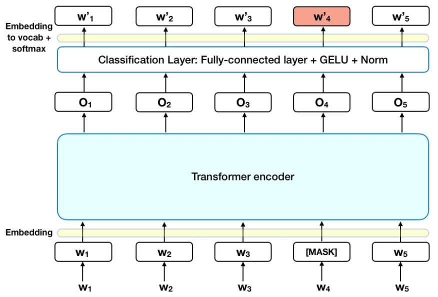
MAE：掩码自编码器
- 随机遮蔽 75% 图像块，编码器只处理可见块
- 轻量解码器 + 掩码 token 重建被遮蔽的像素
- 非对称结构大幅降低预训练计算量
- 可扩展：ViT-Huge 上依然有效（He et al., CVPR 2022）
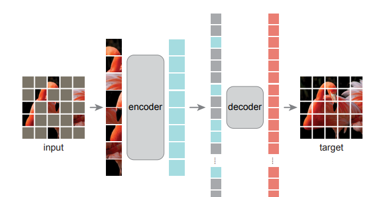
EVA：遮住图像块，但预测的是语义特征
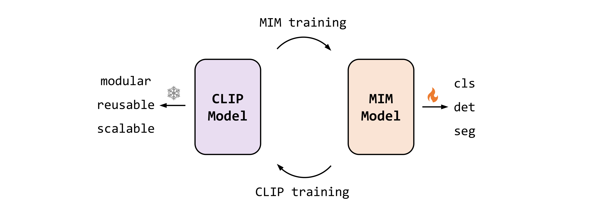
MAE 的重建效果
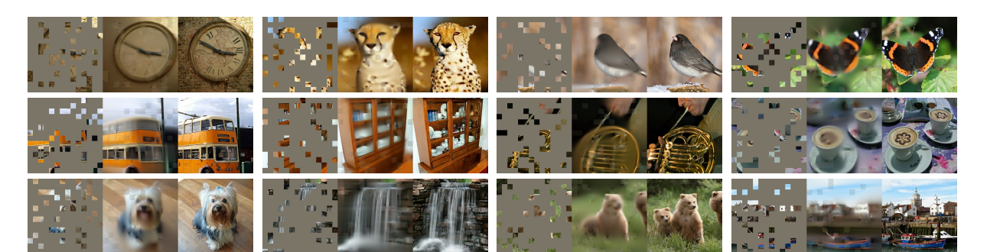
掩码建模的目标：只算被遮住的部分
自回归 / GPT 式预训练
更多自监督路线
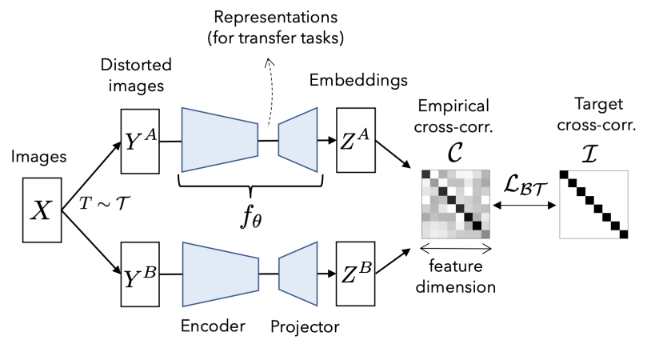
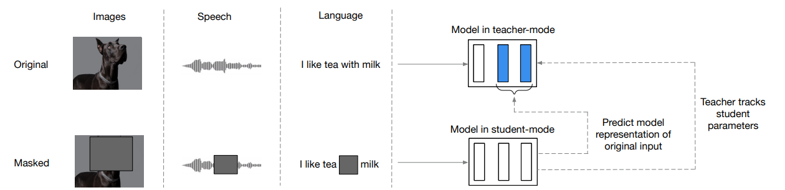
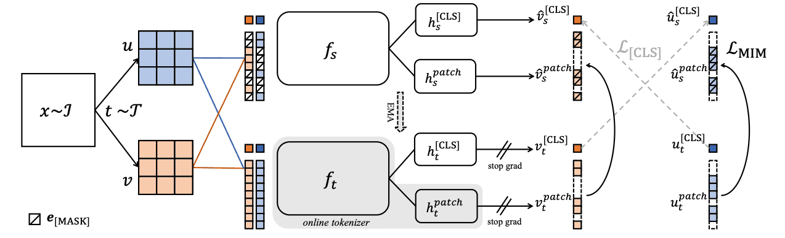
JEPA：在表征空间做预测
- Context encoder读取未遮挡区域，产生上下文表征。
- Predictor结合目标块的位置，预测被遮挡区域应有的表征。
- Target encoder给出学习目标；它不通过梯度直接更新，而由 context encoder 的参数做指数移动平均。
- V-JEPA 把该思路推广到视频；V-JEPA 2 进一步用于动作条件下的机器人规划。
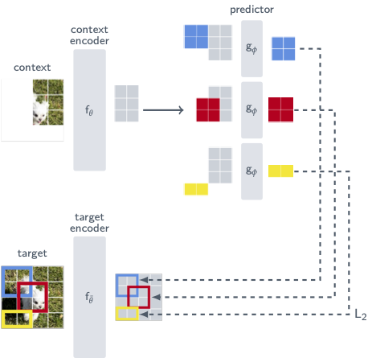
本章小结：掩码建模与自回归
随机遮蔽词再预测 + 双向 Transformer，确立“遮蔽—预测”范式（NLP）。
遮 75% 图像块，编码器只处理可见块 + 轻量解码器重建——损失只在被遮块上计算（MSE）。
p(x) = ∏ p(xi | x<i)：逐元素预测；GPT-1 与 Image GPT 把该路线带入预训练。
Barlow Twins、data2vec、iBOT；JEPA 系列（I-JEPA / V-JEPA / V-JEPA 2）在表征空间预测，通往世界模型与机器人规划。
本章为拓展选讲内容，供学有余力的同学选学
先厘清：本章的“表征”和前面讲的不是一回事
- 编码器在大量数据上训练，权重对所有样本共享
- 目标是泛化：表征能迁移到没见过的数据与任务
- 评价看下游任务：分类、检索、分割……
- 网络权重过拟合单个信号（一张图、一个场景）
- 目标是精确表示：坐标进、属性出，连续可查询
- 评价看重建画质、存储与渲染速度
INR：用网络参数化连续信号
不再保存每个离散采样值，而是学习一个可以查询的连续函数：
- θ：网络权重，编码一个图像、视频或场景
- x：连续坐标；y：该位置的颜色、密度等属性
- 优势：连续可微，可在训练采样点之外查询
- 限制：容量、训练时间与高频细节仍需权衡
(x, y)→fθ→(r, g, b)(x, y, t)→fθ→(r, g, b)(x, y, z, d)→fθ→(r, g, b, σ)坐标可以连续取值，因此输出分辨率不必在存储时固定。
代表工作：NeRF 神经辐射场
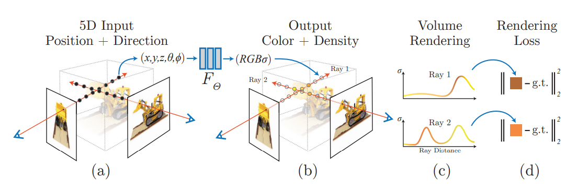
从 NeRF 到 3D Gaussian Splatting
- NeRF用 MLP 隐式存储场景，沿每条射线查询大量采样点并做体渲染。
- 3DGS显式保存大量三维高斯；每个高斯具有位置、形状、颜色和不透明度。
- 渲染时把可见高斯投影到图像并排序混合，因此可达到实时新视角合成。
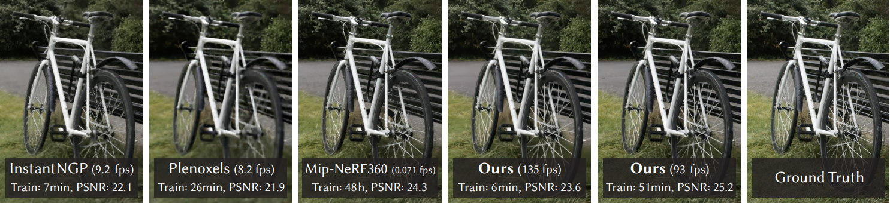
4D Gaussian Splatting：共享一套高斯，只预测随时间发生的形变
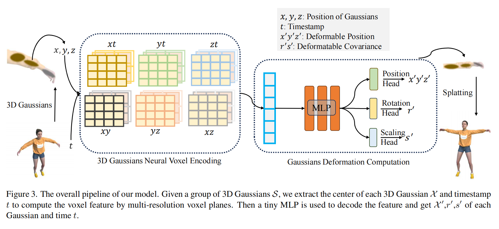
方法是否有用，要同时看画质和渲染速度
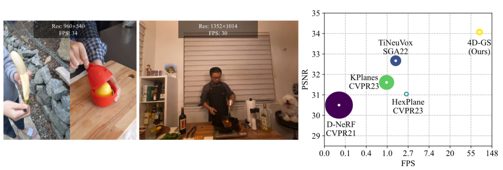
INR 的影响：存储一个函数，而不只是存储采样值
| 应用 | 代表方法 | 连续函数怎样被使用 | 需要同时检查 |
|---|---|---|---|
| 图像 / 视频压缩 | COIN++、NeRV | 用网络权重编码一个信号，按坐标重新生成像素或帧 | 码率、重建质量与解码速度 |
| 连续超分辨率 | LIIF、UltraSR | 查询任意连续坐标，而非固定整数倍放大 | 跨倍率泛化和高频细节 |
| 光场与新视角 | SIGNET、NeRF | 根据空间位置与视线方向预测颜色或辐射场属性 | 画质、训练成本与渲染速度 |
| 生成建模 | 函数分布建模 | 把每个样本看成一个连续函数，再学习函数之间的分布 | 模型容量与生成多样性 |
同一任务上的三条路线：数据量、成本与预期效果
| 路线 | 数据量需求 | 训练成本 | 预期效果 |
|---|---|---|---|
| 从头训练 | 需要大量按批次划分的缺陷标注；缺陷样本稀少时尤其吃力 | 训练轮次多，需自行调架构与超参 | 数据充足时可贴合产线分布；数据少时易过拟合、泛化差 |
| ImageNet 微调 | 少量标注即可起步 | 以预训练权重初始化，收敛快、成本低 | 通常显著优于从头训练；但自然图像与工业表面存在域差距，低层纹理特征未必匹配 |
| 自监督预训练（DINO / MAE）再迁移 | 预训练用无标注产线图像，下游只需少量标注 | 多一段预训练开销，可按资源选方法（MoCo 省显存、MAE 吞吐高） | 预训练分布与任务同源，域差距最小；缺陷标注极少时往往是最佳路线 |
增广安全吗？表征迁移了吗？最后报告什么？
| 检查项 | 本案例中的做法 | 呼应本讲方法 |
|---|---|---|
| 增广安全性 | 翻转 / 旋转：零件方向无任务语义时安全，相机安装方向固定时反而引入分布外样本；裁剪：可能把缺陷区域切掉、把“缺陷”样本裁成“合格”，必须同步检查；颜色抖动：划痕、锈斑依赖颜色线索时不安全 | 只把不改变任务语义的变化当作正样本；回到增广表逐项核对 |
| 表征是否迁移 | 冻结编码器做线性探测与 k-NN 检索，看缺陷 / 合格能否在表征空间分开、缺陷样例的近邻是否仍是缺陷；再与全量微调对照 | 冻结评估 / 线性探针 / k-NN |
| 收尾报告 | 报告三条路线的对照实验（除路线外条件一致）；跨域测试：换新产线、新零件型号；失败样例按缺陷类型、批次、产线分层抽样查错误分布 | 对照实验 + 跨域与鲁棒性测试 + 分层失败分析（见“三讲后的最小实践”） |
三讲之后，完成一个最小但完整的视觉实验
| 需要提交什么 | 最低要求 | 检查重点 |
|---|---|---|
| 问题定义 | 写清输入、输出、数据单位和主要指标 | 任务与指标是否匹配 |
| 数据划分 | 固定训练、验证、测试集；说明划分单位 | 是否存在同主体、近重复或时间泄漏 |
| 可复现基线 | 训练一个简单 CNN，或微调一个公开预训练模型 | 记录随机种子、配置和最好验证轮次 |
| 一次对照实验 | 只改变一种增广、预训练方式或冻结策略 | 除目标因素外，其余条件尽量一致 |
| 结果与失败分析 | 报告测试指标；失败样例按类别、场景、数据来源分层抽样并报告错误分布，样例数由测试集规模与错误率决定，不设固定阈值 | 错误是否集中在特定类别、场景或数据来源 |
回到开场：用好自监督，要回答这四件事
| 开场问题 | 现在应能给出的回答 |
|---|---|
| 1 · 数据增广 | 只把不改变任务语义的变化当作正样本；几何任务还必须同步更新框、掩码或关键点。 |
| 2 · 防止坍塌 | “两个视图一致”存在常数解；需要负样本、非对称网络、动量教师（EMA + stop-gradient）或输出约束排除无信息解。 |
| 3 · 方法选择 | SimCLR 论文典型配置为大 batch、MoCo 用队列省显存、DINO 出密集特征、MAE 论文配置为大数据大模型——这些是典型配置与常见经验，而非硬性规则；按数据与资源条件选择，并会排查坍塌与过拟合。 |
| 4 · 两种“表征” | 可迁移特征表征追求跨任务泛化；INR 用权重精确表示单个信号；3DGS 是显式场景表示，不属于 INR。 |
如何少用人工标注，
学到可迁移、可复用的视觉表征。
参考文献（附录，一）：自监督学习 · 对比学习 · 掩码建模
- Reducing the Dimensionality of Data with Neural Networks. Hinton & Salakhutdinov. Science 2006.
- Colorful Image Colorization. Zhang, Isola, Efros. ECCV 2016.
- Unsupervised Representation Learning by Predicting Image Rotations. Gidaris, Singh, Komodakis. ICLR 2018.
- A Simple Framework for Contrastive Learning of Visual Representations (SimCLR). Chen, Kornblith, Norouzi, Hinton. ICML 2020.
- Momentum Contrast for Unsupervised Visual Representation Learning (MoCo). He, Fan, Wu, Xie, Girshick. CVPR 2020.
- Emerging Properties in Self-Supervised Vision Transformers (DINO). Caron et al. ICCV 2021.
- Learning Transferable Visual Models From Natural Language Supervision (CLIP). Radford et al. ICML 2021.
- Barlow Twins: Self-Supervised Learning via Redundancy Reduction. Zbontar et al. ICML 2021.
- BERT: Pre-training of Deep Bidirectional Transformers for Language Understanding. Devlin, Chang, Lee, Toutanova. NAACL-HLT 2019.
- Masked Autoencoders Are Scalable Vision Learners (MAE). He et al. CVPR 2022.
- EVA: Exploring the Limits of Masked Visual Representation Learning at Scale. Fang et al. CVPR 2023 Highlight.
- Improving Language Understanding by Generative Pre-Training (GPT). Radford et al. OpenAI Technical Report 2018.
- Generative Pretraining from Pixels (Image GPT). Chen et al. ICML 2020.
- data2vec: A General Framework for Self-Supervised Learning in Speech, Vision and Language. Baevski et al. ICML 2022.
- iBOT: Image BERT Pre-Training with Online Tokenizer. Zhou et al. ICLR 2022.
参考文献（附录，二）：基础模型 · 隐式神经表示与 3D 表征
- DINOv2: Learning Robust Visual Features without Supervision. Oquab et al. TMLR 2024.
- DINOv3. Siméoni et al. arXiv Technical Report 2025.
- Sigmoid Loss for Language Image Pre-Training (SigLIP). Zhai, Mustafa, Kolesnikov, Beyer. ICCV 2023.
- SigLIP 2: Multilingual Vision-Language Encoders with Improved Semantic Understanding, Localization, and Dense Features. Tschannen et al. arXiv 2025.
- Self-Supervised Learning from Images with a Joint-Embedding Predictive Architecture (I-JEPA). Assran et al. CVPR 2023.
- Revisiting Feature Prediction for Learning Visual Representations from Video (V-JEPA). Bardes et al. TMLR 2024.
- V-JEPA 2: Self-Supervised Video Models Enable Understanding, Prediction and Planning. Assran et al. arXiv 2025.
- Cambrian-1: A Fully Open, Vision-Centric Exploration of Multimodal LLMs. Tong et al. NeurIPS 2024.
- 3D Gaussian Splatting for Real-Time Radiance Field Rendering. Kerbl, Kopanas, Leimkühler, Drettakis. ACM TOG (SIGGRAPH) 2023.
- 4D Gaussian Splatting for Real-Time Dynamic Scene Rendering. Wu et al. CVPR 2024.
- NeRF: Representing Scenes as Neural Radiance Fields for View Synthesis. Mildenhall et al. ECCV 2020.
- NeRV: Neural Representations for Videos. Chen et al. NeurIPS 2021.
- Learning Continuous Image Representation with Local Implicit Image Function (LIIF). Chen, Liu, Wang. CVPR 2021.
- COIN++: Neural Compression Across Modalities. Dupont et al. TMLR 2022.
- SIGNET: Efficient Neural Representation for Light Fields. Feng & Varshney. ICCV 2021.